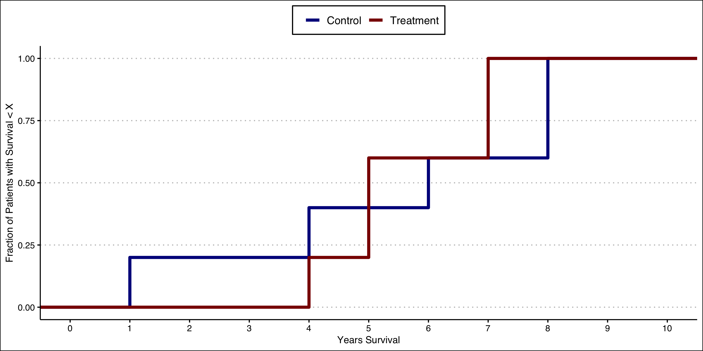
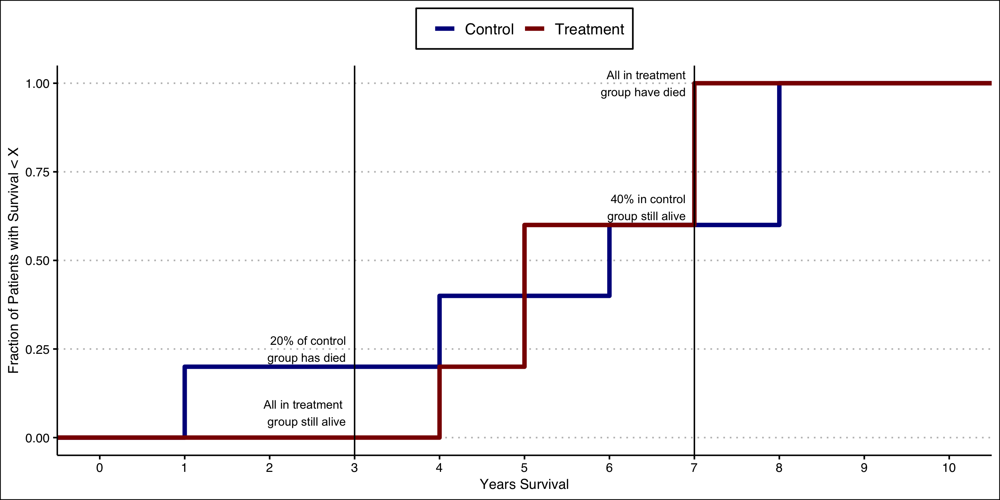
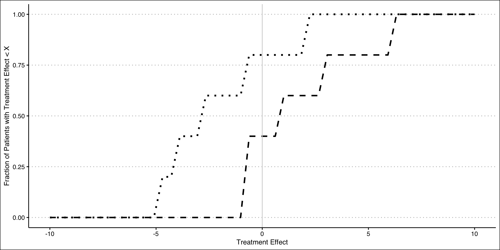

Set Identification and Treatment Effect Bounds
Motivation
The bulk of this course focuses on on point estimation of a single average treatment effect (ATE).
The ATE provides policymakers with information on the average outcome that would occur if everyone were to receive the intervention.
But policy effects often do not work like this.
Motivation
Consider a policy of expanding subsidized private health insurance coverage to everyone.
Such a policy would encourage some people to obtain coverage.
But many others would have obtained coverage in any case.
Some others would still remain uninsured.
Motivation: Heterogeneous Treatment Effects
The ATE doesn’t necessarily tell us about what would happen to people who were newly encouraged to get insurance.
If insurance has the same treatment effect on everyone, then the ATE would tell us something useful.
But often there are heterogenous treatment effects. The ATE only tells us what happens on average.
Motivation: Assumptions for Identification and Estimation
Even with strong designs and approaches, we must often rely on assumptions to identify and/or estimate ATEs.
What if we’re not willing to make these assumptions?
Motivation: Assumptions for Identification and Estimation
It could be that policymakers only need guidance on whether a policy is worth pursuing.
If we could, with minimal assumptions, rule out small/zero treatment effects, that may be sufficient!
Motivation: Assumptions for Identification and Estimation
This lecture will cover methods for set estimation of treatment effects.
Specifically, we can estimate a range of treatment effect values that are consistent with the data we observe.
We can start with the absolute minimal set of assumptions, and dial them up to narrow the bounds.
The Perfect Doctor… Randomized
The data table provides hypothetical data on outcomes (Y=survival years post treatment) for 10 patients.
For each patient both potential outcomes (intervention and no intervention) are shown.
These are not usual data we would observe since we typically only observe one potential outcome!
| Patient ID | Y(1) | Y(0) | Difference |
|---|---|---|---|
| A | 7.0 | 5.0 | 2.0 |
| B | 5.0 | 3.0 | 2.0 |
| C | 5.0 | 8.0 | -3.0 |
| D | 7.0 | 8.0 | -1.0 |
| E | 4.0 | 3.0 | 1.0 |
| F | 10.0 | 1.0 | 9.0 |
| G | 1.0 | 6.0 | -5.0 |
| H | 5.0 | 8.0 | -3.0 |
| I | 3.0 | 8.0 | -5.0 |
| J | 9.0 | 4.0 | 5.0 |
| MEAN | 5.6 | 5.4 | 0.2 |
The Perfect Doctor… Randomized
Lets now assume we observe data from a randomized controlled trial, where the first five patients reflect randomized to the treatment arm, and the final five from the control arm.
We now have missing data on the potential outcome we don’t observe. This is the fundamental problem of causal inference.
| Patient ID | Treatment | Y(1) | Y(0) |
|---|---|---|---|
| A | 1 | 7 | ? |
| B | 1 | 5 | ? |
| C | 1 | 5 | ? |
| D | 1 | 7 | ? |
| E | 1 | 4 | ? |
| F | 0 | ? | 1 |
| G | 0 | ? | 6 |
| H | 0 | ? | 8 |
| I | 0 | ? | 8 |
| J | 0 | ? | 4 |
Average Treatment Effect
But we can estimate an average treatment effect!
The ATE for the RCT data is 0.2, which is identical to the average treatment effect based on the fully observed potential outcomes (0.2).
| Patient ID | Treatment | Y(1) | Y(0) | Diff |
|---|---|---|---|---|
| A | 1 | 7 | ? | |
| B | 1 | 5 | ? | |
| C | 1 | 5 | ? | |
| D | 1 | 7 | ? | |
| E | 1 | 4 | ? | |
| F | 0 | ? | 1 | |
| G | 0 | ? | 6 | |
| H | 0 | ? | 8 | |
| I | 0 | ? | 8 | |
| J | 0 | ? | 4 | |
| MEAN | 5.6 | 5.4 | 0.2 |
Heterogeneous Treatment Effects
The average treatment effect tells us, on average, what would happen if everyone got the treatment.
Note, however, that there are heterogeneous treatment effects.
For example, patient C does better without the new treatment, but is randomized to receive it.
| Patient ID | Treatment | Y(1) | Y(0) | Diff |
|---|---|---|---|---|
| A | 1 | 7 | 5 | 2 |
| B | 1 | 5 | 3 | 2 |
| C | 1 | 5 | 8 | -3 |
| D | 1 | 7 | 8 | -1 |
| E | 1 | 4 | 3 | 1 |
| F | 0 | 10 | 1 | 9 |
| G | 0 | 1 | 6 | -5 |
| H | 0 | 5 | 8 | -3 |
| I | 0 | 3 | 8 | -5 |
| J | 0 | 9 | 4 | 5 |
Effect Heterogeneity: Crossing Curves
We can see this heterogeneity by constructing empirical cumulative distribution function (ECDF) curves for each group.
These curves tell us what fraction of the group population has an outcome less than or equal to the value on the X axis.
Both curves start at 0 because 0% of the group has a survival value less than or equal to the smallest value in the group.
Similarly, both curves end up at at 1.00 because 100% of group has a value less than or equal to the maximum value in the group.

Effect Heterogeneity: Crossing Curves
Note that the curves cross–this tells us there are heterogenous treatment effects.
For example, at 3 years the entire treated group is still alive, but 20% of the control group has died.
But at 7 years all of the treatment group has died and 40% of the control group remains alive!
The observation that the curves cross excludes the possibility that the treatment effect is 0 or constant.

Kolmogorov Bounds
As noted in the motivation section, it may be sufficient for policymakers to be informed of the joint distribution of potential outcomes, or the distribution of the treatment effect.
Kolmogorov’s Conjecture provides a method for bounding the treatment effect with minimal assumptions.
Specifically, we can bound the distribution of the treatment effect even though we only observe the distributions of the outcomes for each of the treatments.
Formal definition:
Let \(\beta_i = y_i(1) - y_i(0)\) denote the treatment effect and \(F\) denote its distribution. Let \(F_0\) denote the distribution of outcomes for treatment \(x=0\) and \(F_1\) denote the distribution of outcomes for treatment \(x=1\). Then \(F^L(b)<=F(b)<=F^U(b)\), where
\[ F^L(b) = \max \\{ \max_y F_1(y) - F_0(y - b),0 \\} \]
and
\[ F^U(b) = 1 + \min \\{ \min_y F_1(y) - F_0(y - b),0 \\} \]
Kolmogorov Bounds
For Kolmogorov bounds, this will be done on the scale of the sample fraction with treatment effect less than or equal to some value.
For example, we will can place bounds on the fraction of the sample that has a 0 or negative treatment effect.
If the lower bound is \(>0\%\), then we know that some fraction of the sample is made worse off.
Formal definition:
Let \(\beta_i = y_i(1) - y_i(0)\) denote the treatment effect and \(F\) denote its distribution. Let \(F_0\) denote the distribution of outcomes for treatment \(x=0\) and \(F_1\) denote the distribution of outcomes for treatment \(x=1\). Then \(F^L(b)<=F(b)<=F^U(b)\), where
\[ F^L(b) = \max \\{ \max_y F_1(y) - F_0(y - b),0 \\} \]
and
\[ F^U(b) = 1 + \min \\{ \min_y F_1(y) - F_0(y - b),0 \\} \]
Kolmogorov Bounds
Let’s start with the observed “RCT” data from the example.
Y_obssummarizes what we observe, i.e., Y(1) if in treatment arm, Y(0) if control.
| patient | X | Y_obs |
|---|---|---|
| A | 1 | 7 |
| B | 1 | 5 |
| C | 1 | 5 |
| D | 1 | 7 |
| E | 1 | 4 |
| F | 0 | 1 |
| G | 0 | 6 |
| H | 0 | 8 |
| I | 0 | 8 |
| J | 0 | 4 |
Kolmogorov Bounds
We’ll now extract out the empirical cumulative distribution function for each group.
This function tells us what fraction of the group has outcome value \(<=\) whatever value you provide it.
Recall from a few slides back I noted that “at 3 years the entire treated group is still alive, but 20% of the control group has died.”
You can see this result in the output on the right.
Kolmogorov Bounds
- Note from the formal definition that we maximize and minimize over values of the outcome \(y\). For example:
\[ F^L(b) = \max \\{ \max_y F_1(y) - F_0(y - b),0 \\} \]
Note that the outcome ranges from 0-10.
So, to construct bounds we’ll need to evaluate each ECDF at 1, 2, 3, … 10 (and everywhere in-between!).
Kolmogorov Bounds
Let’s start with a hypothesized treatment effect of 0 (i.e., the value of \(b\) in the formal definition earlier).
The lower bound tells us: at least what fraction of the sample has a treatment effect of 0 or below?
The upper bound tells us: at most what fraction of the sample has a treatment effect of 0 or below?
Kolmogorov Bounds
So what can we learn from the data?
From earlier, we found that the average treatment effect is 0.2, indicating that the treatment benefits people on average.
But the Kolmogorov bounds at a 0 treatment effect tells us that between 40% and 80% of the sample has a negative treatment effect!
The fact that the treatment harms 40% or more of people who receive may relevant information for decision making.
Kolmogorov Bounds
Let’s now look back at the “full” data (i.e., with both potential outcomes) to confirm our findings.
Indeed, we see that 5 patients (50%) have treatment effects (
Difference) of 0 or below.Of course, in the real world we wouldn’t have access to this full dataset.
But our constructed Kolmogorov bounds (at 0 treatment effect) were 40%-80%, and so accurately captured this information.
| Patient ID | Treatment | Y(1) | Y(0) | Diff |
|---|---|---|---|---|
| A | 1 | 7 | 5 | 2 |
| B | 1 | 5 | 3 | 2 |
| C | 1 | 5 | 8 | -3 |
| D | 1 | 7 | 8 | -1 |
| E | 1 | 4 | 3 | 1 |
| F | 0 | 10 | 1 | 9 |
| G | 0 | 1 | 6 | -5 |
| H | 0 | 5 | 8 | -3 |
| I | 0 | 3 | 8 | -5 |
| J | 0 | 9 | 4 | 5 |
Kolmogorov Bounds
We can now repeat this exercise for different hypothesized treatment effects aside from 0.
A plot of the bounds for various treatment effects is shown on the right.
Notice again our bounds at 0 (40-80%)
And notice also that we can rule out treatment effect values of -5 and below because the bounds hug 0 on both ends.

Treatment Effect Bounds: Alternative Approaches
The previous discussion put bounds on the fraction of the sample itself (e.g., the fraction with negative treatment effects).
What if we want to put bounds on the treatment effect itself–that is, on the scale of the outcome?
Treatment Effect Bounds: Alternative Approaches
We may believe that treatment is selected, but the assumptions required for estimating treatment effects are too restrictive or are unrealistic for our application.
Alternatively, in a randomized setting, we may have noncompliance with treatment, or differential attrition from the study arms.
“Worst Case” Bounds
Also known as “minimal assumptions” bounds or “natural bounds” (Pearl).
Considers treatment effect bounds when the treatment assignment mechanism is unknown.
“Worst Case” Bounds
Define treatment \(X\) and outcome \(Y\), with potential outcomes \(Y(1)\) and \(Y(0)\).
Define the average treatment effect as
\[ ATE = \sum_{x=0}^1 E[Y(1)|X=x]Pr[X=x]-\sum_{x=0}^1 E[Y(0)|X=x]Pr[X=x] \]
- This expression draws on the Law of Total Expectation to decompose the ATE into component parts.
“Worst Case” Bounds
\[ ATE = \bigg ( \overbrace{E[Y(1)|X=1]Pr(X=1) + E[Y(1)|X=0]Pr(X=0)}^{E[Y(1)]} \bigg ) - \\\ \bigg ( \underbrace{E[Y(0)|X=1]Pr[X=1] + E[Y(0)|X=0]Pr[X=0]}_{E[Y(0)]} \bigg ) \]
Under SUTVA, there is no interference among units—so there are only two potential outcomes per unit.
This establishes causal consistency and allows us to simplify because \(Y(x)=Y\) when \(X=x\).
- That is, the Y we observe is \(Y(1)\) when in the treatment group and \(Y(0)\) when in the untreated group.
“Worst Case” Bounds
\[ ATE = \bigg ( \overbrace{E[Y(1)|X=1]Pr(X=1) + \color{red}{E[Y(1)|X=0]}Pr(X=0)}^{E[Y(1)]} \bigg ) - \\\ \bigg ( \underbrace{\color{red}{E[Y(0)|X=1]}Pr[X=1] + E[Y(0)|X=0]Pr[X=0]}_{E[Y(0)]} \bigg ) \]
So we can use the sample to estimate \(E[Y(1)|X=1]\), \(E[Y(0)|X=0]\), \(Pr[X=1]\) and \(Pr[X=0]\)
That gets us most of the way there, but there is a problem:
We can’t observe \(E[Y(1)|X=0]\) or \(E[Y(0)|X=1]\)
For example, we don’t know the outcome for the units that do not get treated under a policy that assigns treatment to everyone.
“Worst Case” Bounds
We can’t observe \(E[Y(1)|X=0]\) or \(E[Y(0)|X=1]\), but can we put bounds on them?
Yes!
“Worst Case” Bounds
What is the weakest possible assumption we could make?
It is to put the largest and smallest possible values on these unknown quantities.
Intuitively, an average cannot be smaller than the smallest possible number in the set of values being averaged. And it can’t be larger than the largest possible number.
The smallest outcome value will be denoted \(\underline{Y}\), and the largest \(\overline Y\).
Bounds will be denoted by \(\underline{\text{ATE}}\) and \(\overline{\text{ATE}}\).
“Worst Case” Bounds
- Lower bound is given by
\(\underline{\text{ATE}} = (E[Y|X=1]-\overline{Y})Pr[X=1] + (\underline{Y}-E[Y|X=0])Pr[X=0]\)
- Upper bound is given by
\(\underline{\text{ATE}} = (E[Y|X=1]-\underline{Y})Pr[X=1] + (\overline{Y}-E[Y|X=0])Pr[X=0]\)

The Perfect Doctor…Bounded!
The data table provides hypothetical data on outcomes (Y=survival years post treatment) for 10 patients.
For each patient only the observed potential outcome is shown.
Treatment status is selected: the intervention is only received among patients who would do better, i.e., \(Y(1)>Y(0)\).
A naive analysis would conclude the intervention effect is -0.6–though we know from the full data that the true treatment effect is 0.2
| Patient ID | Tx | Y(1) | Y(0) |
|---|---|---|---|
| A | 1 | 7 | |
| B | 1 | 5 | |
| C | 0 | 8.0 | |
| D | 0 | 8.0 | |
| E | 1 | 4 | |
| F | 1 | 10 | |
| G | 0 | 6.0 | |
| H | 0 | 8.0 | |
| I | 0 | 8.0 | |
| J | 1 | 9 | |
| MEAN | 7 | 7.6 |
The Perfect Doctor…Bounded!
| Patient ID | Tx | Y(1) | Y(0) |
|---|---|---|---|
| A | 1 | 7 | |
| B | 1 | 5 | |
| C | 0 | 8.0 | |
| D | 0 | 8.0 | |
| E | 1 | 4 | |
| F | 1 | 10 | |
| G | 0 | 6.0 | |
| H | 0 | 8.0 | |
| I | 0 | 8.0 | |
| J | 1 | 9 | |
| MEAN | 7 | 7.6 |
Worst Case Bounds: Useless?
The estimated bounds (-3.3 to 2.7) are … wide.
The benefit is that, knowing treatment is totally selected, they are constructed with minimal assumptions.
They’re not totally useless: if policies (e.g., new clinical or treatment guidance) would not be implemented unless the treatment effect was larger than 3, then the natural bounds provide useful and actionable information.
Treatment Effect Bounds: Next Steps
If we’re willing to dial up our assumptions slightly, we can start to tighten the bounds a bit.
Specifically, we will leverage additional variation in our data to narrow the estimated bounds.
Assumption: there is some observable characteristic (Z) such that the average treatment effect does not change with changes in the observable characteristic.
If this holds, then we can estimate bounds on subsets of the data based on \(Z\).
- For this example we’ll assume \(Z\) is binary.
Bounds with Exogenous Variation
\[ \overline{\text{ATE}} = \min \\{ (E[Y|X=1,Z=1] - \underline{Y})Pr(X=1|Z=1) \\\ +(\overline{Y}-E[Y|X=0,Z=1])Pr(X=0|Z=1),\\\ (E[Y|X=1,Z=0] - \underline{Y})Pr(X=1|Z=0)\\\ +(\overline{Y}-E[Y|X=0,Z=0])Pr(X=0|Z=0)\\} \]
\[ \underline{\text{ATE}} = \max \\{ (E[Y|X=1,Z=1] - \overline{Y})Pr(X=1|Z=1) \\\ +(\underline{Y}-E[Y|X=0,Z=1])Pr(X=0|Z=1),\\\ (E[Y|X=1,Z=0] - \overline{Y})Pr(X=1|Z=0)\\\ +(\underline{Y}-E[Y|X=0,Z=0])Pr(X=0|Z=0)\\} \]
Bounds with Exogenous Variation
| Patient ID | Tx | Z | Y(1) | Y(0) |
|---|---|---|---|---|
| A | 1 | 0 | 7 | |
| B | 1 | 0 | 5 | |
| C | 0 | 1 | 8.0 | |
| D | 0 | 0 | 8.0 | |
| E | 1 | 0 | 4 | |
| F | 1 | 1 | 10 | |
| G | 0 | 1 | 6.0 | |
| H | 0 | 1 | 8.0 | |
| I | 0 | 1 | 8.0 | |
| J | 1 | 1 | 9 | |
| MEAN | 7 | 7.6 |
Bounds with Exogenous Variation
| Patient ID | Tx | Z | Y(1) | Y(0) |
|---|---|---|---|---|
| A | 1 | 0 | 7 | |
| B | 1 | 0 | 5 | |
| C | 0 | 1 | 8.0 | |
| D | 0 | 0 | 8.0 | |
| E | 1 | 0 | 4 | |
| F | 1 | 1 | 10 | |
| G | 0 | 1 | 6.0 | |
| H | 0 | 1 | 8.0 | |
| I | 0 | 1 | 8.0 | |
| J | 1 | 1 | 9 | |
| MEAN | 7 | 7.6 |
Bounds: Next Steps
Recall that the “true” treatment effect is 0.2.
Our original “natural bounds” (-3.3 to 2.7) were quite wide, but as promised they do include the true treatment effect.
We narrowed our bounds further to (-2.5 to 1.5) based on an additional assumption.
We’ll next take this one step further to tighten them even more.
Bounds with Monotonicity
Monotone treatment response (MTR): Under treatment each individual will have a response greater than or equal to that under control.
- At worst, receiving the flu vaccine does not increase the likelihood a patient develops flu-like symptoms.
- At best, it increases the likelihood they do not develop symptoms.
Assuming either of the above allows us to narrow the bounds because the assumptions place additional constraints on unobserved counterfactuals.
Bounds with Monotonicity
- Monotone treatment selection (MTS): individuals who select treatment will on average have outcomes greater than or equal to that of individuals who do not select treatment under the counterfactual scenario all individuals selected the same treatment.

Sources
This lecture drew on adapted material from the following:
- Christopher P. Adams, Learning Microeconometrics with R
- Scott Cunningham, Causal Inference: The Mixtape
A nice STATA command for bounds is available and discussed in McCarthy, Ian, Daniel L. Millimet, and Manan Roy. “Bounding treatment effects: A command for the partial identification of the average treatment effect with endogenous and misreported treatment assignment.” The Stata Journal 15.2 (2015): 411-436.